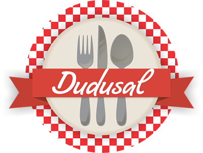
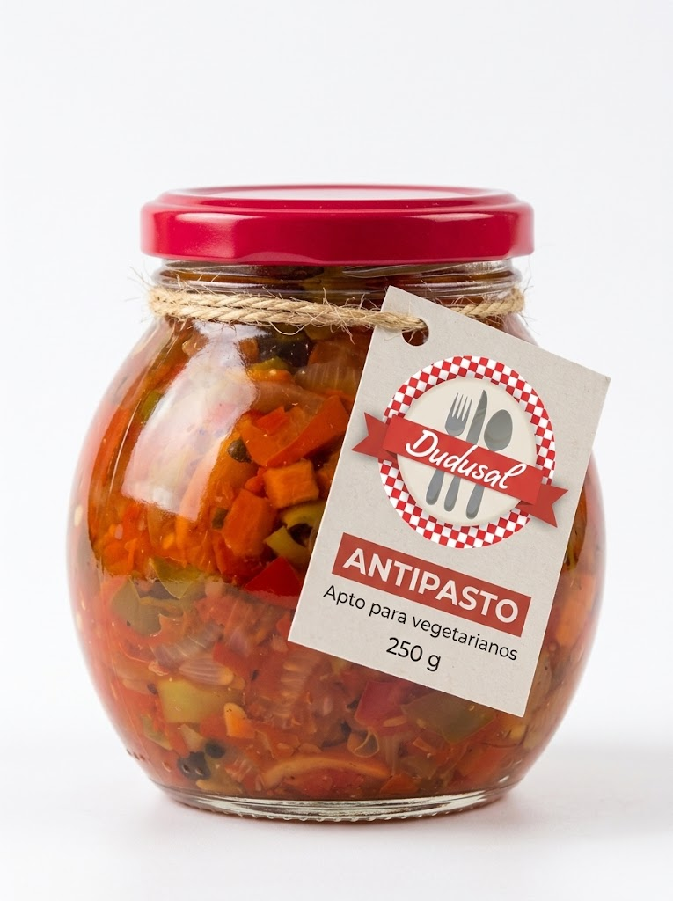
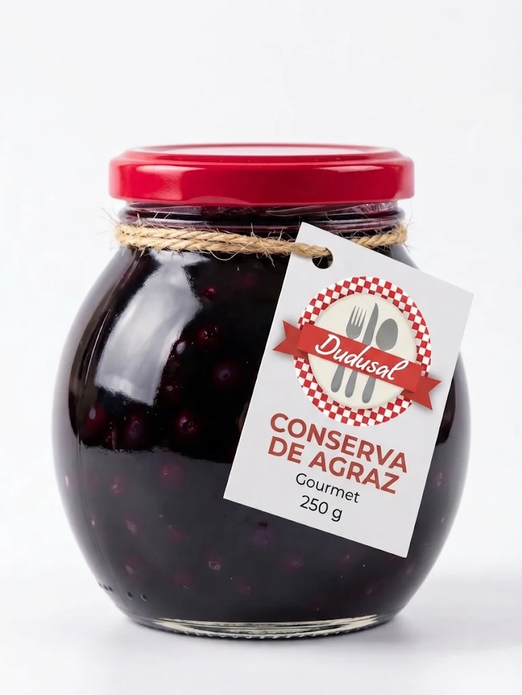
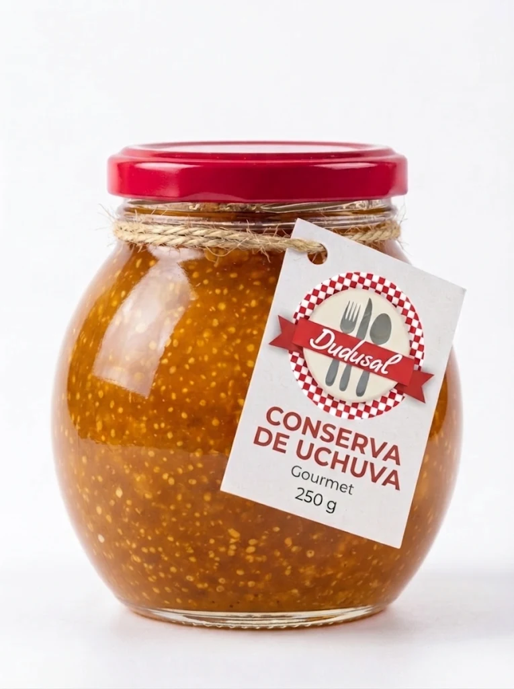
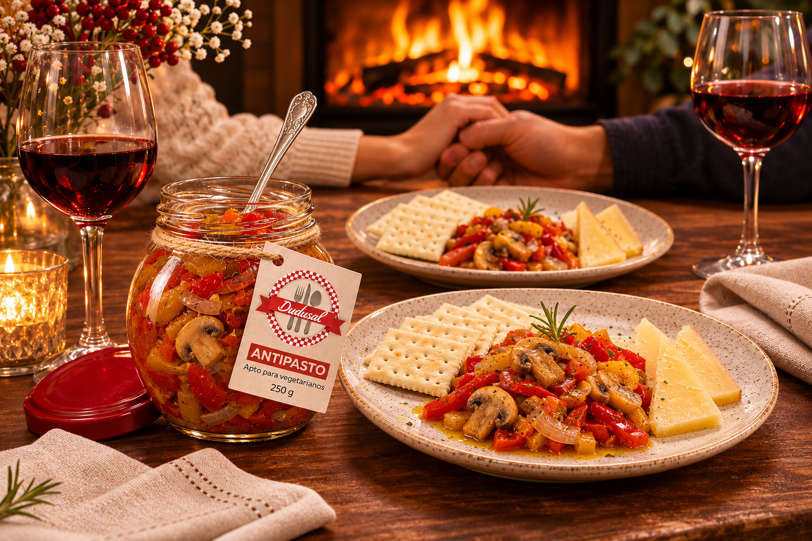
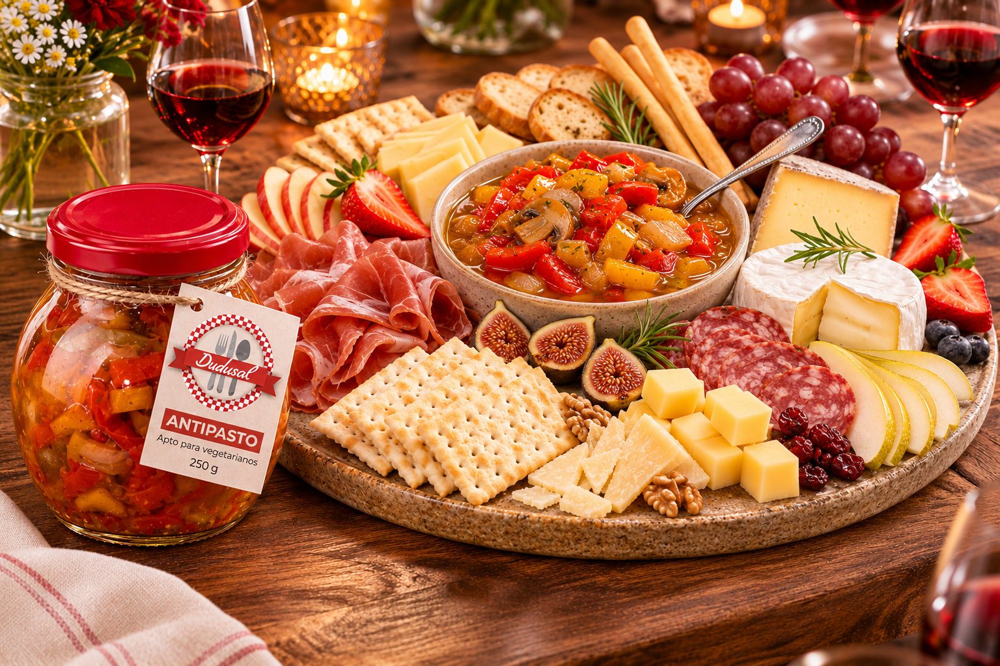
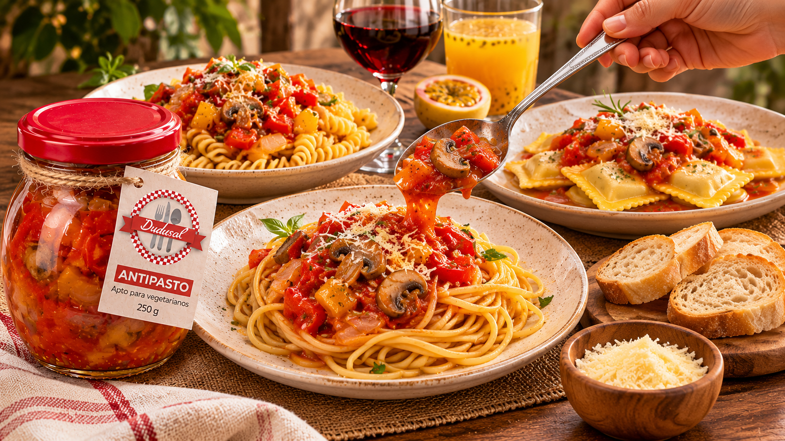
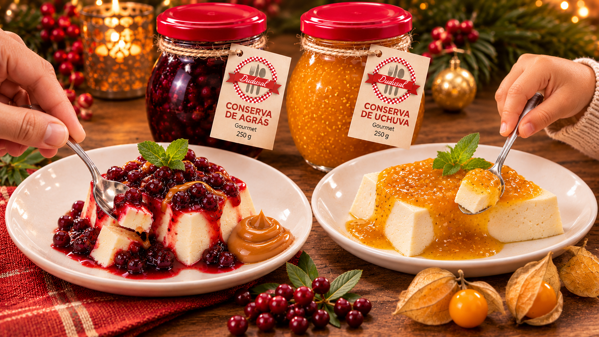
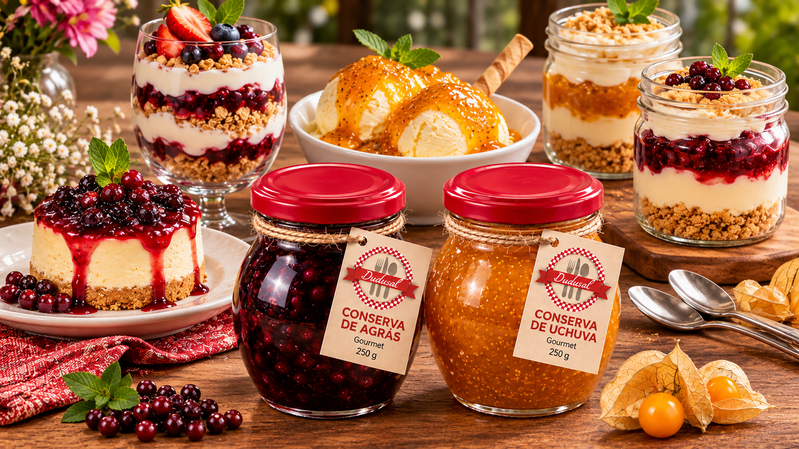
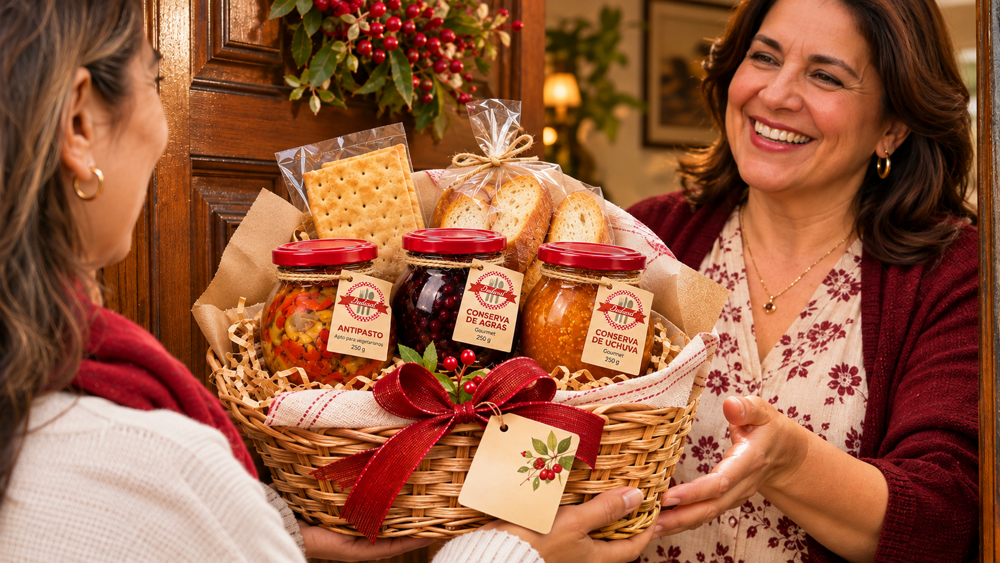

Antipasto
Cena romántica en 5 minutos
La solución perfecta para una noche gourmet. El equilibrio crujiente de las galletas con la acidez suave del antipasto...
Leer propuesta completa →
Disfruta nuestras recetas artesanales sin preservantes. Explora cómo servirlas en tus eventos festivos o en tu casa.




La solución perfecta para una noche gourmet. El equilibrio crujiente de las galletas con la acidez suave del antipasto...
Leer propuesta completa →
Eleva tus preparaciones festivas. Sirve el frasco directamente en la tabla rodeado de quesos madurados, jamones y buen gusto...
Leer propuesta completa →
Una cena rápida y elegante. Agrega unas cucharadas de antipasto sobre tu pasta recién salida para darle sazón...
Leer propuesta completa →
Acompaña un bocado de cuajada o natilla con la acidez agridulce del agraz o uchuva, delicia tradicional con frutas exóticas...
Leer propuesta completa →
Crea capas en postres favoritos con una conserva natural gourmet que los elevarán de nivel...
Leer propuesta completa →
Incluir DUDUSAL es la opción ideal para agradecer una invitación o regalar, no sólo alegras sino deleitas con tu llegada...
Leer propuesta completa →